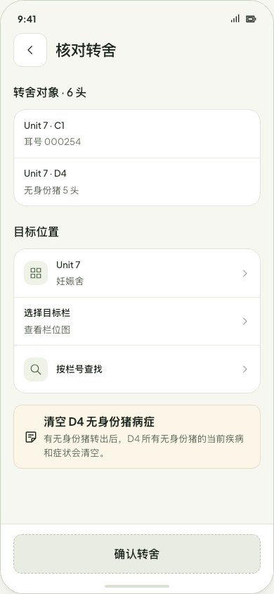
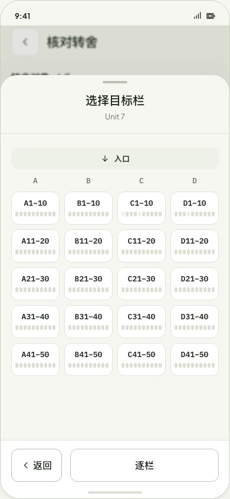
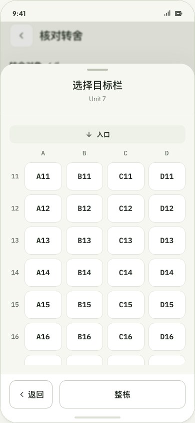
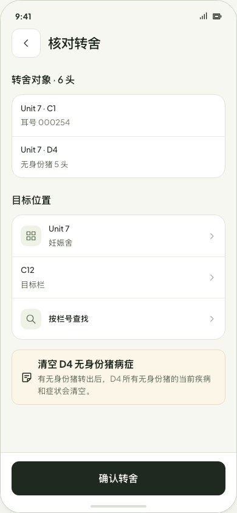
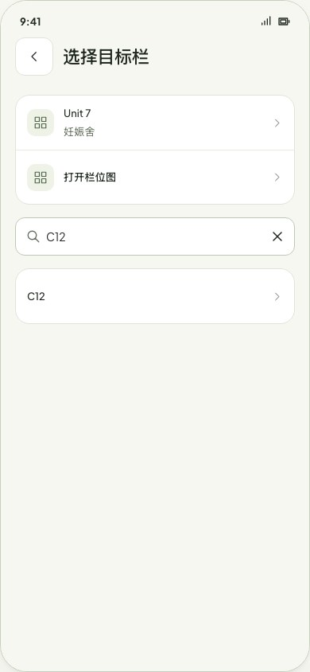
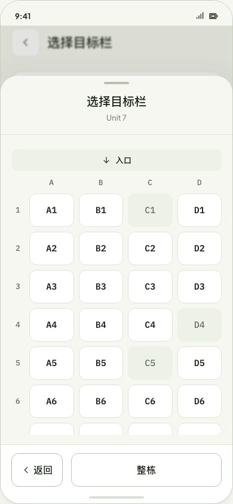
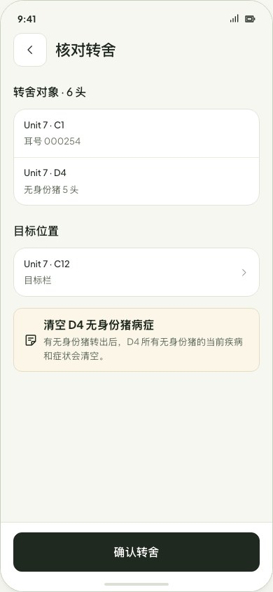
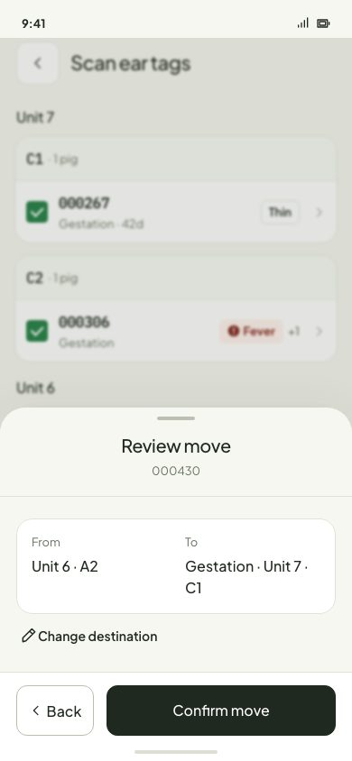
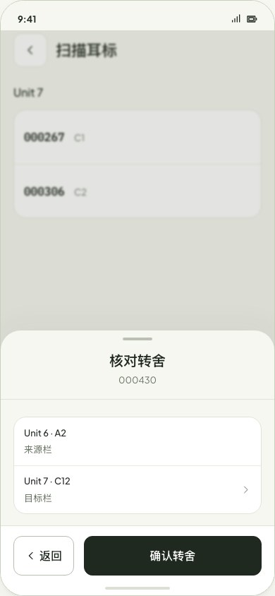
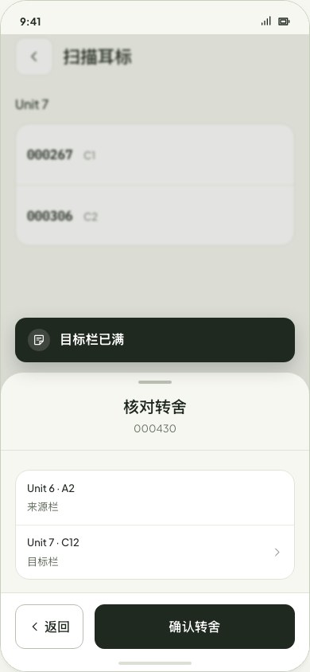

巡检转舍 · 选栏方案
同一例用两种方式选 Unit 7 的 C12。样例共转 6 头猪，C1 一头有耳号，D4 转 5 头无身份猪。D4 只填本次要转的总头数。两套方案都用组件库的 PenMap Sheet，长房间在底部点「整栋」。
A · 核对页打开栏位图
Move → 核对对象 → 选房间或打开栏位图 → 点目标栏 → 确认转舍
适合按现场位置找栏。已在目标房间时，直接点「选择目标栏」。知道栏号时，也能从核对页打开搜索。目标确定后回同一页，可以点目标栏再改。




B · 先按栏号找，再核对
Move → 选择房间和栏 → 核对对象与目的地 → 确认转舍
适合栏很多、工作人员已经知道栏号的情况。输入 C12 后点结果。只知道大概位置时，也可以从同一页打开标准栏位图。两条路径都回同一张核对页。



建议 B。 知道栏号时可以直接搜，需要看栏位相对位置时再打开整栋图。如果现场多数是对着栏位找位置，A 从核对页开图更顺。
异单元移入的核对和报错
扫描或查找 → 点 000430 → 只移入／移入并选中 → 选本单元目标栏 → 核对
核对里直接点目标栏这一整行修改。目的地限定在当前 Unit 7。接口返回错误时，在核对页短暂显示服务端消息，耳号、目标栏和已有勾选都保留，可改栏再提交。图中的「目标栏已满」是提示样例。



PR 接入核对
PR #317 已把巡检和分娩的常规栏位图接入标准 Sheet，补齐布局样例、整栋和区间跳转。PR #318 的栏位 Move、名单 Move、单猪 Move、异单元移入、分娩母猪和仔猪 Move 要用同一套 Sheet。进入地图前由各入口提供房间和可选栏，点栏只更新转舍草稿。
栏位图读取房间布局。单栏房间通过列表点选，可选的空栏仍可作为目标，来源栏和已知不可用栏不可点。地图负责选栏，核对页负责提交。
两边的巡检与分娩入口、页面登记和生成的 Atlas 有文件冲突。建议以 #317 的常规栏位图为基准，把 Move 的选择行为接上，重新生成 Atlas，并回放两边的入口。